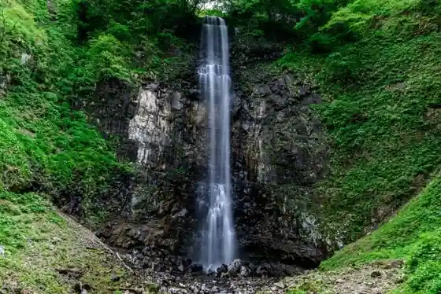
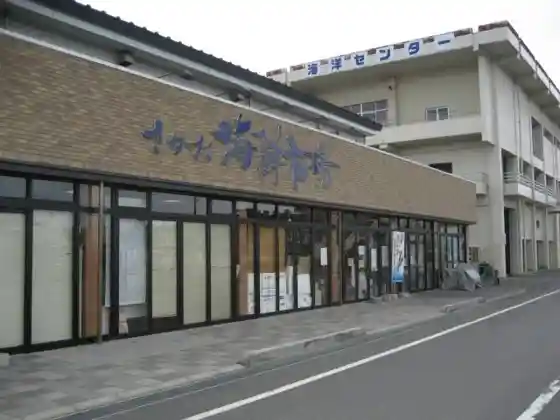
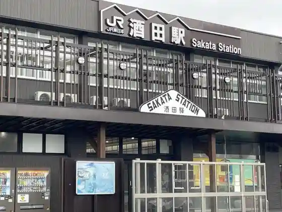
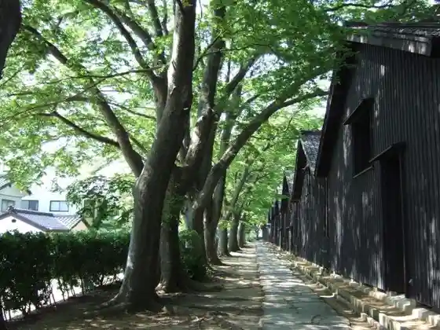

Tobishima
Sakata, Yamagata · 0234-26-5759 · Official / source link
Tamasudare Falls (Sakata)
Sakata, Yamagata · 0234-64-3111 · Official / source link

Sakata Kaisen Market
Sakata, Yamagata · 0234-23-5522 · Official / source link

Sakata Eki
Sakata, Yamagata · 0234-22-4102 · Official / source link

Sankyo Soko
Sakata, Yamagata · 0234-24-2994 · Official / source link

Sankyo Soko no Raitoappu
Sakata, Yamagata · 0234-24-2994 · Official / source link
Shonai Airport
Sakata, Yamagata · 0570-050-141 · Official / source link
Suna Kozan Umi Ko Tera
Sakata, Yamagata · 0234-22-4264 · Official / source link
Sakata Yume no Gu Raku
Sakata, Yamagata · 0234-22-1223 · Official / source link
Tatsugayu Onsen
Sakata, Yamagata · 0234-62-2147 · Official / source link
Chokai Kogen Kazokuryoko Village
Sakata, Yamagata · 0234-64-4111 · Official / source link
Tate no Kawa Shuzo
Sakata, Yamagata · 0234-52-2323 · Official / source link
Cho Umi Forest
Sakata, Yamagata · 0234-26-5759 · Official / source link
SAKATANTO
Sakata, Yamagata · 0234-25-0303 · Official / source link
Maiko Chaya Soma Ro Takehisayumeji Art Museum
Sakata, Yamagata · 0234-21-2310 · Official / source link
Hiyoriyama Park (Sakata)
Sakata, Yamagata · 0234-26-5745 · Official / source link
Yamagataken Sakata Kaiyo Center
Sakata, Yamagata · 0234-26-5642 · Official / source link
Hachimori Onsen Yurinko
Sakata, Yamagata · 0234-64-2001 · Official / source link
Sakata Minato Kuruzu
Sakata, Yamagata · 0234-22-3911 · Official / source link
Fudo Falls (Sakata)
Sakata, Yamagata · 0234-64-3111 · Official / source link
Minato Market
Sakata, Yamagata · 0234-26-0190 · Official / source link
Domon Kobushi Shashin Art Museum
Sakata, Yamagata · 0234-31-0028 · Official / source link
Sakata Minato Kyu Kaisen Tonya Iesaka Tei
Sakata, Yamagata · 080-8543-5591 · Official / source link
Sakata Sakana Market
Sakata, Yamagata · 0234-22-2750 · Official / source link
Sakata Beika (Oranda Sembei FACTORY)
Sakata, Yamagata · 0234-25-0017 · Official / source link
Sakata Ekimae Koryu Kyoten Shisetsu Miraini
Sakata, Yamagata · 0234-24-2454 · Official / source link
Yu no Dai Onsen Chokaisan So
Sakata, Yamagata · 0234-61-1727 · Official / source link
KURA CAFE (Sakata Yume no Tomo Raku Nai)
Sakata, Yamagata · 0234-22-1223 · Official / source link
Tsuruma Ike
Sakata, Yamagata · 0234-64-3111 · Official / source link
Honma Art Museum
Sakata, Yamagata · 0234-24-4311 · Official / source link
Juni Taki
Sakata, Yamagata · 0234-52-3915 · Official / source link
Kaian Tera
Sakata, Yamagata · 0234-22-0227 · Official / source link
Iroha Kura Park
Sakata, Yamagata · Official / source link
Sakata Kitako Ryokuchi Lookout (Minato Mo no Shiri Kan)
Sakata, Yamagata · 0234-31-7117 · Official / source link
Tobishima Beach
Sakata, Yamagata · 0234-26-5759 · Official / source link
Shonai Kome History Museum (Heikan)
Sakata, Yamagata · 0234-24-2994 · Official / source link
Hachimori Campground
Sakata, Yamagata · 0234-64-3083 · Official / source link
Honma Ie Kyuhon Tei
Sakata, Yamagata · 0234-22-3562 · Official / source link
Uimago Shuzo Museum (Kura Tambo Kan)
Sakata, Yamagata · 0234-31-2320 · Official / source link
Matsuyamajo Ote Mon
Sakata, Yamagata · 0234-62-2632 · Official / source link
Shonai Yuhi no Oka Campground
Sakata, Yamagata · 0234-92-4570 · Official / source link
Matsuyama Rekishi Park
Sakata, Yamagata · 0234-62-2611 · Official / source link
Sakata Art Museum
Sakata, Yamagata · 0234-31-0095 · Official / source link
Sakata Yanagikoji Yatai Village Kitamae Alley
Sakata, Yamagata · 0234-21-8377 · Official / source link
Tobishima Marin Plaza
Sakata, Yamagata · 0234-96-3011 · Official / source link
Basho Zo to Basho Kuhi
Sakata, Yamagata · 0234-26-5759 · Official / source link
Mokin Rui Hogo Center
Sakata, Yamagata · Official / source link
Shoseki Yama Enmei Tera (Shingonshu Chizan Ha) / Shonai Sanju San Kannon Dai 18 Ban
Sakata, Yamagata · 0234-94-2361 · Official / source link
Iimori Yama Park
Sakata, Yamagata · 0234-26-5745 · Official / source link
Kyu Abe Ie
Sakata, Yamagata · 0234-54-2776 · Official / source link
Maizuru Park
Sakata, Yamagata · 0234-64-3111 · Official / source link
Nanshu Shrine
Sakata, Yamagata · 0234-31-2364 · Official / source link
Kaisen Donya
Sakata, Yamagata · 0234-26-6111 · Official / source link
Mangetsu
Sakata, Yamagata · 0234-22-0166 · Official / source link
Saijo Kawa Kako
Sakata, Yamagata · 0234-26-5759 · Official / source link
Tobishima Nagisa no Kane
Sakata, Yamagata · 0234-26-5759 · Official / source link
Yoshishige Yama Mochiji In (Soto Shu) / Shonai Sanju San Kannon Dai 10 Ban
Sakata, Yamagata · 0234-24-1164 · Official / source link
Hiyoriyama Obata Ro
Sakata, Yamagata · 0234-25-5729 · Official / source link
Matsuyama Bunka Densho Kan
Sakata, Yamagata · 0234-62-2632 · Official / source link
Yuyu no Mori Onsen Aiai Hirata
Sakata, Yamagata · 0234-61-7520 · Official / source link
Hasu Takashi Tera
Sakata, Yamagata · 0234-22-1898 · Official / source link
Seigen Tera
Sakata, Yamagata · 0234-24-2024 · Official / source link
Hora Takiyama So Mitsudera (Soto Shu) / Shonai Sanju San Kannon Dai 12 Ban
Sakata, Yamagata · 0234-62-2170 · Official / source link
Shita Hieda Shrine
Sakata, Yamagata · 0234-22-0274 · Official / source link
Kyu Shirasaki Iin
Sakata, Yamagata · 0234-22-2416 · Official / source link
Sunayama Park
Sakata, Yamagata · 0234-62-2611 · Official / source link
Men Workshop
Sakata, Yamagata · 0234-24-2258 · Official / source link
Daigo Yama Dai Zen Tera
Sakata, Yamagata · 0234-25-2120 · Official / source link
Jigan Tera
Sakata, Yamagata · 0234-64-3870 · Official / source link
Tentaikansoku Kan Kosumosu Domu (Heikan)
Sakata, Yamagata · 0234-24-2992 · Official / source link
Kobayashi Onsen (Kyukanchu)
Sakata, Yamagata · 0234-26-5759 · Official / source link
Torin Yama Hozo Tera (Soto Shu) / Shonai Sanju San Kannon Dai 13 Ban
Sakata, Yamagata · 0234-62-2169 · Official / source link
Unagi Kappo Tama Kan
Sakata, Yamagata · 0234-22-0257 · Official / source link
Sakata Machi Bugyo Tokoro Ato
Sakata, Yamagata · 0234-24-2994 · Official / source link
Motori Yama Ryutaku Tera (Soto Shu) / Shonai Sanju San Kannon Dai 15 Ban
Sakata, Yamagata · 0234-23-3315 · Official / source link
Mikazuki Ken Naka Town Mise
Sakata, Yamagata · 0234-22-2162 · Official / source link
Hina no Kazari Kashi Seisaku Experience
Sakata, Yamagata · 090-6222-9007 · Official / source link
Keigakura
Sakata, Yamagata · 0234-52-3910 · Official / source link
Mitsuoka Shrine
Sakata, Yamagata · 0234-26-5759 · Official / source link
Kutsurogi Kappo Kokorozashi Hata
Sakata, Yamagata · 0234-23-1655 · Official / source link
Sushi Kappo Suzu Matsurigoto
Sakata, Yamagata · 0234-22-2872 · Official / source link
Sakata Toradishonarubiiru
Sakata, Yamagata · 0234-28-8826 · Official / source link
Ao Sawa Gorge
Sakata, Yamagata · 0234-64-3111 · Official / source link
Yakumo Shrine
Sakata, Yamagata · 0234-22-1715 · Official / source link
Kinowa Saku Ato
Sakata, Yamagata · 0234-24-2994 · Official / source link
Teuchi Chisoba Dewa
Sakata, Yamagata · 0234-25-4580 · Official / source link
Seiyo Kappo Kagetsu
Sakata, Yamagata · 0234-25-3966 · Official / source link
Kiyoshi Kame Sono
Sakata, Yamagata · 0234-23-0388 · Official / source link
Kenryo Yama Entsu Tera (Soto Shu) / Shonai Sanju San Kannon Dai 11 Ban
Sakata, Yamagata · 0234-64-2163 · Official / source link
Yakuo Yama Toko Tera (Soto Shu) / Shonai Sanju San Kannon Dai 17 Ban
Sakata, Yamagata · 0234-52-3366 · Official / source link
Jiko Taki
Sakata, Yamagata · 0234-64-3111 · Official / source link
Hirata Ranch Tonya
Sakata, Yamagata · 0234-23-8011 · Official / source link
Resutoran Nico
Sakata, Yamagata · 0234-28-9777 · Official / source link
Ryotei Kaori Umesaki
Sakata, Yamagata · 0234-23-3366 · Official / source link
Kyu Mitsuoka Bunko
Sakata, Yamagata · 0234-22-0551 · Official / source link
Sakata Aioi Kudo Art Museum
Sakata, Yamagata · 090-2846-6846 · Official / source link
Shokusai Jun Aji Hoko Tei (Reiwa 8 Nen 7 Gatsu 29 Nichi Ni Main Shop (Kaori Umesaki) De Eigyo Saikai)
Sakata, Yamagata · 0234-23-3366 · Official / source link
Kurihara Kansen Do
Sakata, Yamagata · 0234-24-9212 · Official / source link
Shima no Kafesupesu Shimakahe
Sakata, Yamagata · 0234-96-3800 · Official / source link
Izumi Ryu Tera
Sakata, Yamagata · 0234-22-2488 · Official / source link
Kyu Abumiya
Sakata, Yamagata · 0234-22-5001 · Official / source link
Jojitsu Eda Shrine
Sakata, Yamagata · 0234-22-9512 · Official / source link
Yoshimitsu Yama Kannon Tera (Shingonshu Chizan Ha) / Shonai Sanju San Kannon Bangai
Sakata, Yamagata · Official / source link
Shoseki Omatsu Ie
Sakata, Yamagata · 0234-94-2617 · Official / source link
Sakata Ritsu Museum
Sakata, Yamagata · 0234-24-6544 · Official / source link
Fudomyo Fukuo Tera
Sakata, Yamagata · 0234-24-5589 · Official / source link
Kafe e Jierato Moare
Sakata, Yamagata · 0234-22-5280 · Official / source link
Sakanaya Tomi Ju
Sakata, Yamagata · 0234-26-8044 · Official / source link
Sushi Kappo Koi Sei
Sakata, Yamagata · 0234-24-1741 · Official / source link
Tsuke Mendo Yu Iori
Sakata, Yamagata · 0234-28-8659 · Official / source link
Tensho Tera
Sakata, Yamagata · 0234-22-3103 · Official / source link
Taishin Tera
Sakata, Yamagata · Official / source link
Sakata Yama Ryu Gen Tera
Sakata, Yamagata · 0234-22-8044 · Official / source link
Daruma Sushi
Sakata, Yamagata · 0234-24-0008 · Official / source link
Furansu Kyodoryori Ru Pottofu
Sakata, Yamagata · 0234-26-2218 · Official / source link
Kappo
Sakata, Yamagata · 0234-22-0738 · Official / source link
Tazawa Kawa Dam
Sakata, Yamagata · 023-630-2616 · Official / source link
Jofuku Tera
Sakata, Yamagata · 0234-22-2747 · Official / source link
Abe Memorial Museum (Heikan)
Sakata, Yamagata · 0234-24-2994 · Official / source link
Haruo Yama Mitsukuni Tera (Shingonshu Daigo Ha) / Shonai Sanju San Kannon Dai 20 Ban
Sakata, Yamagata · 0234-22-1653 · Official / source link
Higashi Ken
Sakata, Yamagata · 0234-22-7502 · Official / source link
Sakana Tei
Sakata, Yamagata · 0234-24-5123 · Official / source link
Yamato Sushi
Sakata, Yamagata · 0234-22-9510 · Official / source link
Sakata Ramen Kachofugetsu
Sakata, Yamagata · 0234-24-8005 · Official / source link
Higashine Kashi Ho
Sakata, Yamagata · Official / source link
Naka Town Ki Village Ya
Sakata, Yamagata · 0120-36-1515 · Official / source link
Kappo
Sakata, Yamagata · 0234-26-6888 · Official / source link
Kappo Shokudo Izu Kiku Sushi Tokoro Musashi
Sakata, Yamagata · 0234-22-3216 · Official / source link
Masanori Tera
Sakata, Yamagata · 0234-22-1107 · Official / source link
Ramen Tsuke Men Shingetsu
Sakata, Yamagata · 0234-26-0141 · Official / source link
Takeuchi Kashi Ho
Sakata, Yamagata · 0234-22-1402 · Official / source link
Kappo Jiro Be
Sakata, Yamagata · 0234-24-0248 · Official / source link
Jun Aji Izutsu
Sakata, Yamagata · 0234-24-1422 · Official / source link
Men Tokoro Abe
Sakata, Yamagata · 0234-22-2600 · Official / source link
Senryu Shokudo
Sakata, Yamagata · 0234-22-1188 · Official / source link
Hyoroku Tama
Sakata, Yamagata · 0234-23-5688 · Official / source link
Mikazuki Ken Eki Higashi Mise
Sakata, Yamagata · 0234-23-4395 · Official / source link
Mikazuki Ken Higashinaka no Kuchi Mise
Sakata, Yamagata · 0234-22-7616 · Official / source link
Sakata Kasho Kikuchi
Sakata, Yamagata · 0234-26-3331 · Official / source link
Kyu Village no Sakaba
Sakata, Yamagata · 0234-24-1935 · Official / source link
Gurutenfuriisuiitsu no Komeru
Sakata, Yamagata · 0234-28-8333 · Official / source link
Aji Workshop Hachigatsu
Sakata, Yamagata · 0234-22-1721 · Official / source link
Honkaku Teuchi Tagoto (Heigyo)
Sakata, Yamagata · Official / source link
Ra Ruche
Sakata, Yamagata · 0234-23-1210 · Official / source link
Hisashi Shi Sakana Sei Naka Town Mise Ni Daime Yoshino Sushi (Kyu Aji no Sanpomichi Hisashi Shi Sakana Sei)
Sakata, Yamagata · 0234-21-2202 · Official / source link
Wagyu Man Sai Zen Be
Sakata, Yamagata · 0234-26-2029 · Official / source link
Resutoramburannyu Keyaki
Sakata, Yamagata · 0234-68-9843 · Official / source link
Suzukiya
Sakata, Yamagata · 0234-22-9254 · Official / source link
Kodawari no Miso Kobo Ra Men Satoshi
Sakata, Yamagata · 0234-26-9383 · Official / source link
Yakiniku Sui En Main Shop
Sakata, Yamagata · 0234-22-5131 · Official / source link